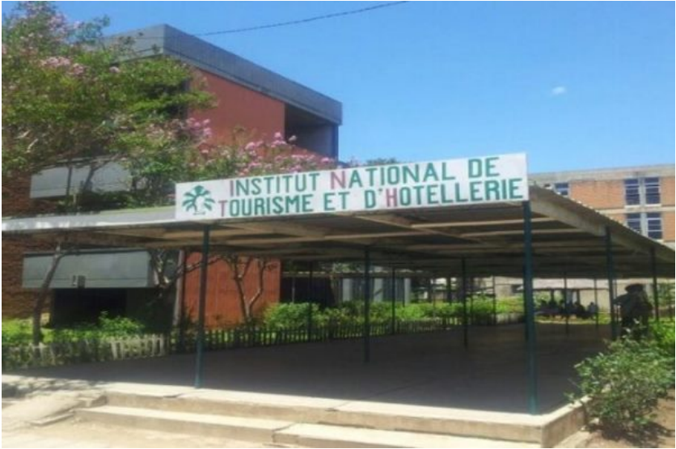
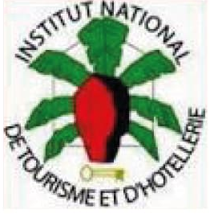

Projet FAR-Itasy
Coopération Décentralisée Région Nouvelle-Aquitaine / Région Itasy


Formation en alternance au sein de l'INTH
Projet FAR-Itasy
Coopération Décentralisée Région Nouvelle-Aquitaine / Région Itasy
Source: Consultez ici
L’Institut National du tourisme et de l’hôtellerie est en phase de modernisation depuis quelques années. Le programme Innovations sectorielles pour la formation en alternance à Madagascar (ISFAM) a été mis en place dans cette optique. L’objectif est de réviser entièrement la formation tourisme, de la moderniser et de renforcer la capacité de l’institut à proposer des formations de qualité.
La Fédération des Hôteliers et Restaurateurs de Madagascar se tient à côté de l’INTH pour atteindre cet objectif, d’autres acteurs sont concernés comme l’AFD (Agence Française de Développement) qui est le financeur principal. L’IECD (Institut Européen de Coopération et de Développement) apporte son soutien technique. En fait, l’appui de l’IECD est essentiel.
Outre la Validation des Acquis de l’Expérience, les formateurs bénéficieront d’un accompagnement technique en amont. Une certification sera offerte. Un remaillage de leurs fonctions aura également lieu. Plus important encore, les référentiels de formation seront actualisés. La ministre de l’EFTP a réitéré son engagement à soutenir l’INTH dans ce sens. L’équipe technique du ministère est déjà prête à concrétiser le projet, notamment la mise à jour des référentiels de formation.
Lors de l’ouverture de la formation, le nombre des personnes souhaitent suivre la formation était très élevé. En effet, la formation s’adresse aux jeunes qui n’ont pas pu continuer leurs études de second cycle et qu’ils souhaitent s’engager dans le secteur d’hôtellerie. L’INTH n’a pas pu répondre à tous les dossiers de candidature.
Des concours pour sélectionner les alternants ont eu lieu avec la FHORM et les professionnels de haut niveau dans le domaine de l’hôtellerie et la Restauration. Les alternants sélectionnés ont dû signer un engagement d'assister au début du cursus.
Durant le cursus, les alternants suit une formation théorique de deux mois à l'institut suivi de deux mois en entreprise. Ce cursus se répète trois fois durant une année.
Ensuite l'INTH a déjà de la visibilité auprès des entreprises qui interviennent dans le domaine de l'hôtellerie. En effet, ces entreprises souhaitent que leurs futurs employés soient formés à l'Institut.
De plus, l'INTH possède un réseau puissant : l'Institut maintien des relations étroites avec les entreprises locales et le membre du conseil d'administration de la FHORM.
Environ 95% des alternants trouvent des emplois après leurs formations, c'est une des clés du succès de l'INTH. Durant la première promotion, les hôtels et restaurants membres de la FHORM s’étaient déjà engagés à embaucher les alternants. De plus, c'est auprès de ces entreprises que les étudiants passent leurs stages pratiques.
Actuellement, l’INTH envisage d'établir encore plus de partenariats et d'élargir ses interventions. Selon Raharison Haja, Chef de Service de formation au sein de l'Institut, il est important de savoir connaitre les besoins des entreprises par exemple les mains d'œuvre qu'elles n'ont pas.
Afin de mieux identifier leurs besoins, des enquêtes et descentes sur terrain devraient être mises en œuvre. De plus, des stratégies de communication pourront être mises en place pour convaincre de nouvelles entreprises de rejoindre la démarche.
D'autre part, il est important de mettre place des formations en alternance délocalisées pour que les alternants puissent avoir des moindres coûts en matière de logement de frais de transport.
Haja RAHARISON
Chef de Service de la formation INTH
Téléphone:
Adresse Mail: inthformation@gmail.com